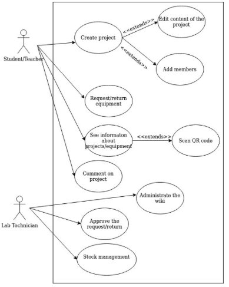

Personas
Student/Teacher
John is a 19 year old currently in his 2º year of university. In one of his classes he was asked to work on a group project.
For that reason he needs a platform to manage said project,
to request specialised equipment, and to coordinate better with his team.
Technician
Mike works as technician at the University and is currently responsible for the equipment and resources available there. He has no IT or engineering knowledge.
The software he is using at the moment is outdated, and for more convenient experience in management
he needs a program that better fits his skills and is easy to use.
Use cases

- Create project: the user can create a new project, containing information like title, reference, number of contributors, equipment used. For project details, the user has to use the wiki page.
- Request/return equipment: users can create a new request to borrow an equipment from the lab.
- See information about projects/equipment: all details about equipment available in the makers lab can be found in the application.
- Administrate the wiki page: the technician can edit, delete and purge any article in the wiki page.
- Approve/deny request and returns: the technician, and only him, has the possibility to approve or deny requests made by users.
- Stock management: the technician can do all crud operations to manage the stock of equipment.